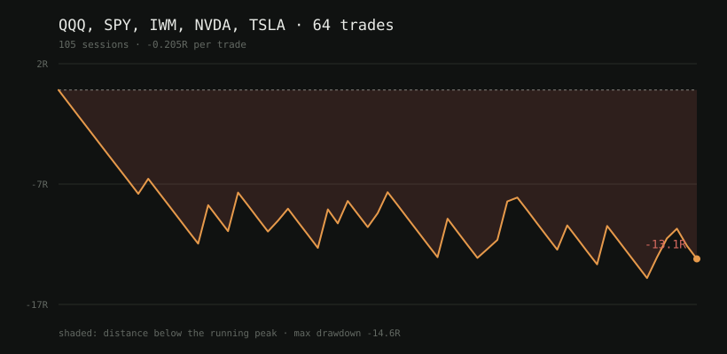

A backtest is a machine for producing encouraging numbers. Point a naive one at any strategy and it will tell you the strategy works. This one is built to say no.
Left alone, the default implementation of every step quietly resolves ambiguity in the strategy's favour. Three of these are fixable in code. The fourth is only fixable in how you report.
A signal computed from a bar's close, filled at that same bar's open. One bar of clairvoyance and the equity curve is beautiful.
A stop that fills exactly at the stop price assumes somebody was standing there. Capping every loss at −1R deletes tail risk from the curve entirely.
"62% win rate" over eleven trades is not a win rate. It is seven trades.
The best cell in a grid of twenty, on a sample of twenty trades, is the cell that fit the noise best. That is what "best" means at that size.
The 15-minute opening range breakout, transcribed from source rather than from folklore. Scored across five instruments over the 29 days of one-minute data free feeds will serve.
| instrument | trades | win rate | expectancy |
|---|---|---|---|
| QQQ | 9 | 11% | −0.817R |
| SPY | 14 | 29% | −0.130R |
| IWM | 14 | 36% | +0.021R |
| NVDA | 14 | 43% | +0.046R |
| TSLA | 13 | 15% | −0.574R |
| pooled | 64 | 28% | −0.245R |
Break-even at 1:3 is 25%, so 28% sounds survivable until the losers turn out to be full stops and the winners mostly time out flat. Read it with the caveats attached, because they are load-bearing: one month, one market regime, and only 60% of the instruments agree in sign — which means the pooled figure is partly an average of unrelated results.

Three checks, and a sign test that settles a question worth settling.
$ selftrade run QQQ sessions 21 (12 with no setup) trades 9 win rate 11% (break-even is 25%) expectancy -0.817R per trade exits 1× session end, 8× stop Not evidence yet: • 9 trades is below the 30 needed to say anything. Every number here is an anecdote. • a coin weighted to break even produces a run this good 92% of the time. That is not a signal. • expectancy is not positive: it lost money on this sample. Sign check: mirrored, the same trades score +0.817R. A weak rule mirrors to roughly break-even; a large, symmetric flip means the direction logic is inverted -- a bug, not a strategy.
That last check earned its place the hard way. The first version of this strategy lost in every configuration, with win rates below random for its payoff — and the mirrored trades came back large and symmetric, which reads exactly like an inverted signal. It was not. It was four bugs in the harness, and the flip was the symptom.
The stop was the interesting one. "20 to 25 points" is a fact about Nasdaq futures, where the index trades near 20,000. Copied onto a $600 ETF it is a 4% stop that never triggers; scaled to keep the percentage it becomes 0.6, which sits inside one-minute noise — the 90th-percentile minute spans about 0.8 — so it is hit by the bar you entered on, at random. Thirteen consecutive stops at −1.02R, and it reads as a broken strategy rather than a broken measurement.
Two independent switches, and the failure being defended against is not you changing your mind.
# 1. at the call site broker = HyperliquidBroker(address=..., live=True) # 2. in the shell that is placing orders $ export SELFTRADE_ARM_LIVE=i-understand-this-sends-real-orders # either one alone: NotArmed: live=True was requested but the environment is not armed.
The thing being defended against is a cron entry, a script, or an agent inheriting an environment it did not read. The environment variable has exactly one purpose, so nothing can arm it as a side effect of doing something else — and the check runs at the moment of sending, so a broker built while armed cannot keep sending after the environment is disarmed.
Order placement on Hyperliquid is deliberately not implemented. Signing means the account key in-process, and a hand-rolled EIP-712 signer gets it subtly wrong and sends a valid signature for an order nobody meant. Reads are genuine and need no key.
The dashboard is read-only by construction: no route takes a side or a size, and it does not import anything that can send. A dashboard that can be reached is a dashboard that can be reached by something other than you, and the safe design is one where the worst outcome of that is a stale chart.